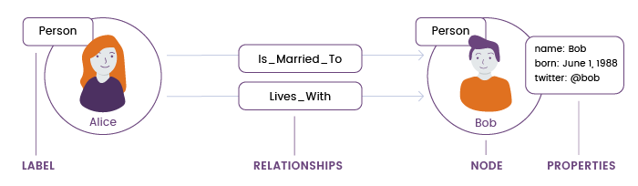
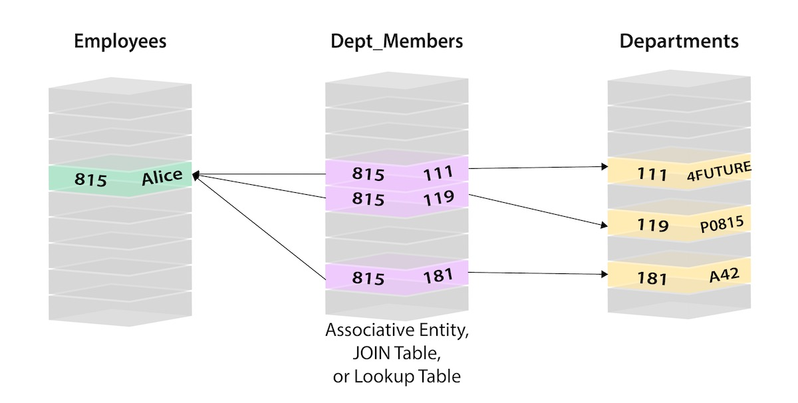

How Neo4j database work
==>To handle a growing volume of connected data, you can go for Neo4j, a non-relational graph database that’s optimized for managing relationships. The Neo4j database can help you build high-performance and scalable applications that use large volumes of connected data
==> Neo4j provides its own implementation of graph theory concepts. Let’s take an in-depth look at the Labeled Property Graph Model in the Neo4j database. It has the following components:
1) Nodes : (equivalent to vertices in graph theory). These are the main data elements that are interconnected through relationships. A node can have one or more labels (that describe its role) and properties (i.e. attributes).
2) Relationships : (equivalent to edges in graph theory). A relationship connects two nodes that, in turn, can have multiple relationships. Relationships can have one or more properties.
3) Labels : These are used to group nodes, and each node can be assigned multiple labels. Labels are indexed to speed up finding nodes in a graph.
4) Properties. These are attributes of both nodes and relationships. Neo4j allows for storing data as key-value pairs, which means properties can have any value .
The graph data structure might seem unusual, but it’s simple and natural. Here’s an example of a simple graph data model in Neo4j:


In the above graph version, we have a single node for Alice with a label of Person. Alice belongs to 3 different departments, so we create a node for each one and with a label of Department. To find out which departments Alice belongs to, we would search the graph for Alice’s node, then traverse all of the BELONGS_TO relationships from Alice to find the Department nodes she is connected to. That’s all we need – a single hop with no lookups involved.

This is how Neo4j is different from Relational database query